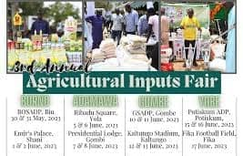

Relier les agriculteurs à l'innovation et aux ressources
Le salon annuel des intrants agricoles à Yola est un événement majeur qui réunit des agriculteurs, des vendeurs d'intrants agricoles, des agences gouvernementales et des chercheurs de tout l'État. Le salon sert de plate-forme pour présenter les dernières innovations en technologie agricole, équipements et intrants, y compris semences, engrais et pesticides. C'est une opportunité inestimable pour les agriculteurs d'interagir directement avec les fournisseurs, de découvrir de nouveaux produits et d'accéder aux ressources dont ils ont besoin pour améliorer leurs pratiques agricoles et augmenter leurs rendements.